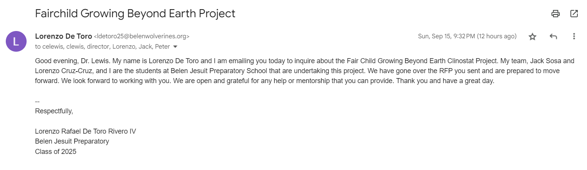
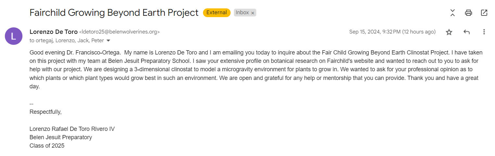

Market Research
To validate this project, it became necessary to first conduct research on different aspects of this project. I focused my research primarily on clinostats, finding academic papers through scholar.google.com. After finding my sources, I read trough them, summarized them, and added my own critique or notes to it. Here are the results of that research:
Paper 1:
The Physical Basis of Gravity Stimulus Nullification by Clinostat Rotation
This document explores how clinostat devices eliminate/reduce the effects of gravity on plant cells. These clinostat devices rotate plants around a horizontal axis. This rotation results in the particles within the plant cells following a quasi-circular path, which effectively nullifies gravity’s impact by keeping these particles near-stationary. This study also presents a method to calculate the optimal rotation rate that minimizes the effects of both gravity and centrifugal forces. This enables researchers to simulate microgravity environments and study plant growth within such an environment.
The authors also discuss the limitations of single-axis clinostats, especially for large plants and long-duration experiments, and propose multi-axis designs to overcome these challenges. They argue that most low-gravity biological responses can be studied using clinostats, reducing the need for expensive satellite-based experiments. This research is significant for space biology, providing a theoretical and practical foundation for simulating zero-gravity conditions in biological studies.
This paper offers my team insight on how exactly clinostats work and how they affect plant growth. By rotating the plant, gravity’s effect on the plant is reduced drastically, to the point where it’s practically a non-existent variable. This shows us how effective clinostats can be in studying plant growth in microgravity environments. This paper also encourages our proposal of a 3-dimensional clinostat, as it explained that a clinostat with multiple axes of movement could overcome some issues present in the single-axis clinostat used. This paper was primarily used as a source of clarity for how to move forward with our project.
Citation: Dedolph, R. R., & Dipert, M. H. (1971). The physical basis of gravity stimulus nullification by clinostat rotation. Plant Physiology, 47(6), 756–764. https://doi.org/10.1104/pp.47.6.756
Paper 2:
Plant Growth Processes in Arabidopsis Under Microgravity Conditions Simulated by a Clinostat
This document explores how clinostat devices eliminate/reduce the effects of gravity on plant cells. These clinostat devices rotate plants around a horizontal axis. This rotation results in the particles within the plant cells following a quasi-circular path, which effectively nullifies gravity’s impact by keeping these particles near-stationary. This study also presents a method to calculate the optimal rotation rate that minimizes the effects of both gravity and centrifugal forces. This enables researchers to simulate microgravity environments and study plant growth within such an environment.
The authors also discuss the limitations of single-axis clinostats, especially for large plants and long-duration experiments, and propose multi-axis designs to overcome these challenges. They argue that most low-gravity biological responses can be studied using clinostats, reducing the need for expensive satellite-based experiments. This research is significant for space biology, providing a theoretical and practical foundation for simulating zero-gravity conditions in biological studies.
I reviewed this paper specifically to see how specific plants might react to being grown in a microgravity environment. This paper showed how, while some growth processes might be inhibited, certain plants can still adapt to such conditions and survive in this environment. However, this means that research on what kind of plants would work best in this situation is necessary. As of right now, I believe that looking into plants that can grow omnidirectionally as opposed to straight up or to one direction would be beneficial to the project.
Citation: Ishii, Y., Hoson, T., Kamisaka, S., Miyamoto, K., Ueda, J., Mantani, S., Fujii, S., Masuda, Y., & Yamamoto, R. (1996). Plant growth processes in Arabidopsis under microgravity conditions simulated by a clinostat. Biological Sciences in Space, 10(1), 3–7. https://doi.org/10.2187/bss.10.3
Paper 3:
Development and Validation of a 3D Clinostat for the Study of Cells during Microgravity Simulation
This article discusses the creation and validation of a 3D clinostat, a device used to simulate microgravity conditions on Earth by rotating cells or biological samples along multiple axes. This device was designed by the Microgravity Laboratory/IPCT-PUCRS and tested by Kingston University's Stem Cell Therapy Group. Its primary purpose is to study how different types of human cells, such as cancer cells and stem cells, react to microgravity. These studies aim to understand how cells adapt to reduced gravity, which is crucial for space exploration and understanding health risks in astronauts.
The clinostat's validation was conducted by testing four types of human cancer cells and cord blood stem cells (CBSC). This clinostat offers a promising tool for researching cancer therapies, tissue engineering, and regenerative medicine, as the 3D culture environment is better for cell growth and grouping than 2D methods. It also provides a cost-effective alternative for studying the effects of microgravity, with potential applications in space biology and drug testing.
This paper explains the use of a 3D clinostat in researching cancer therapies for different types of human cancer cells. The paper not only shows us the functionality of a clinostat, but it also gives us an idea of how this project can be applied to several different fields of study, not just to study plant growth in microgravity. Understanding that a project can be applied to different fields of study is incredibly important. While the main focus of our project is to work with GBE and create a clinostat for microgravity, if we are to find something while working through this program that will advance research in another field, such as cancer therapies, then it becomes necessary to expand the project out and share what we have found.
Citation: Russomano, T., Cardoso, R. B., Falcao, F. P., Dalmarco, G., dos Santos, C. R. V., dos Santos, L. G. F., de Azevedo, D. F. G., dos Santos, M. A., Martinelli, L., Motta, J. D., Forraz, N., & McGuckin, C. P. (2005). Development and validation of a 3D clinostat for the study of cells during microgravity simulation. 2005 IEEE Engineering in Medicine and Biology 27th Annual Conference. https://doi.org/10.1109/iembs.2005.1616474
Patent Research
After reading through academic papers, I shifted my focus over to researching patents that showed previous attempts at solutions for issues relating to this project. Two of the patents relate to clinostats, however the last relates moreso to the process of supplyng liquid and nutrients to plants in space. Here are the results of that research:
Patent 1:
3-Dimensional Clinostat for Cell Culture (US7291500B2)
This patent presents a 3-dimensional clinostat designed to simulate microgravity for the cultivation of tissues and cells. The primary goals are to enable the formation of 3-dimensional tissues, prevent cell dispersion, support long-term cultivation, and optimize the growth environment. The clinostat achieves this by rotating cell cultures around multiple axes, which reduces the effects of gravity. The method involves encapsulating cells or cell lumps with fluid and possibly an artificial matrix in a vessel, adjusting the viscosity of the fluid to keep cells from touching the vessel walls, and promoting cell differentiation. This setup allows for the creation of large, complex tissues and artificial organs, with the capability to adjust fluid circulation and matrix support as needed for optimal growth conditions.
This patent was researched mainly because of the diagrams provided. There are diagrams from pages 3-11 illustrating the clinostat and its different parts, showing how it comes together and works. This was important for us as it allows us to clearly visualize how the clinostat is formed. For me personally, I had initially thought that the clinostat needed three different axes of rotation, however this patent helped me understand that 2 was more than enough for what the clinostat was being used for.
Citation: Uemura, M., Gyotoku, J., & Asashima, M. (2007, November 6). 3-Dimensional Clinostat for Cell Culture.
Patent 2:
Fast rotating clinostat useful for weightlessness simulation, comprises receptacle for receiving organisms or substances, radiation generator for generating optical radiation, and radiation receiver device for detecting optical radiation (DE102011080696A1)
The patent describes a fast-rotating clinostat designed to simulate weightlessness and facilitate the study of small organisms or substances under these conditions. The clinostat operates by rotating a receptacle around an axis, preventing sedimentation of particles and mimicking a zero-gravity environment. It features a radiation generator, such as high-power diodes, and a radiation receiver, like photomultipliers or fluorescence microscopes, to study luminescence in organisms mixed with luminescent dyes. The system allows for flexible experimentation with various wavelengths of optical radiation and is housed in a light-tight chamber to avoid interference from ambient light. The clinostat can be configured to perform both quantitative analysis, using photomultipliers, and qualitative analysis, using fluorescence microscopes. Design variations include a capillary receptacle with photomultipliers in one embodiment and a slide with a fluorescence microscope in another, each tailored to capture and analyze luminescence effectively. This invention aims to improve the study of small organisms and substances by integrating advanced detection methods and rotation mechanisms.
Another source illustrating how versatile the clinostat can be in the realm of research. This patent mainly shows that different kinds of analysis can be conducted using a clinostat, most importantly qualitative and quantitative analysis. In terms of our project, this would apply to the plant growth and utility. The qualitative data analysis would refer to the vitality of the plant or how edible its produce is after growing in microgravity, essentially if the microgravity has any effect on the plant’s overall health. In contrast, the quantitative analysis would focus on the plant’s physical growth, how long it takes to grow, in what direction the plant grows, etc. These things are important to research, and knowing that the clinostat is useful for both is an advantage.
Citation: Hauslage, J. (2016, September 29). Fast rotating clinostat useful for weightlessness simulation, comprises receptacle for receiving organisms or substances, radiation generator for generating optical radiation, and radiation receiver device for detecting optical radiation.
Patent 3:
Intelligent aeroponic microgravity & earth nutrient delivery (i-amend) system for bioregenerative space life support and earth applications (US20240049664A1)
The patent details the I-AMEND System, a specialized aeroponic nutrient delivery system designed to support crop growth in both microgravity and terrestrial environments. The system features an aeroponic chamber equipped with a Liquid Nutrient Emitter and an Air Emitter. In operation, the Liquid Nutrient Emitter releases pressurized liquid nutrients toward the crop roots, while the Air Emitter helps move these nutrients through the root mass by pushing floating droplets or bulk liquid. This innovative approach ensures efficient nutrient delivery and promotes optimal crop growth. Unlike previous systems, which often direct liquid and air in multiple directions or use emitters primarily for liquid dispersion, the I-AMEND System uses emitters configured to direct liquid and air in a single direction along the chamber. This design enhances the forward movement of nutrients and gases, particularly in microgravity. The system's advantages include effective nutrient delivery, efficient resource use, and versatility for applications in space habitats, lunar or Martian environments, and on Earth. The patent includes various embodiments and illustrations to depict different configurations and functionalities of the system.
This patent offers insight on supplying nutrients to plants and crops while in a microgravity environment. I decided to research this to begin gathering ideas on how to supply nutrients and water to the plants growing on the clinostat. This is one of the major challenges with this project, and is one of the main focuses of our iteration. I wanted to begin gathering ideas on how to effectively transmit water to the plants while they are rotating. While this patent doesn’t focus on clinostat application, it does help in understanding the limitations that microgravity places on supplying plants with the necessary nutrients. Previously I had only been thinking of how to get water to the plants, but this patent also brought my attention to mineral nutrients that the plant might also require. This patent mainly serves as a catalyst for the development of a water ann/or nutrient transport system for the clinostat.
Citation: Cuello, J. L., Mehdipour, Y., Shih, C.-H., Welchert, J., Stalkfleet, K., Gellenbeck, S., & Hodge, T. (2024, February 15). Intelligent aeroponic microgravity & earth nutrient delivery (i-amend) system for bioregenerative space life support and earth applications.
Academic Research
Finally, I tried reaching out to professionals for help or mentorship for this project. I first emailed Dr. Carl E Lewis, the director of Fairchild and one of the organizers of the Fairchild Growing Beyond Earth project. I reached out, letting him know that my team and I were the students at Belen Jesuit that were undertaking this project. I also asked him for guidance and let him know that any mentorship was welcome and appreciated.
I also emailed Dr. Javier Francisco-Ortega, a professor a professor at FIU in the Department of Biological Sciences. I saw his profile on Fairchild's research department page and noticed his extensive research on different species of tropical plants. I reached out to askif he would be able to help us in any way with finding different plant species that would thrive in a microgravity environment. Unfortunately, he responded by letting us know that this topic was outside of his expertise.
